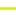

<!doctype html>
<html lang="en">
    <head>
        <meta charset="utf-8">
        <meta http-equiv="X-UA-Compatible" content="IE=edge">
        <meta name="viewport" content="initial-scale=1,user-scalable=no,maximum-scale=1,width=device-width">
        <meta name="mobile-web-app-capable" content="yes">
        <meta name="apple-mobile-web-app-capable" content="yes">
        <link rel="stylesheet" href="css/leaflet.css"><link rel="stylesheet" href="css/L.Control.Locate.min.css">
        <link rel="stylesheet" href="css/qgis2web.css"><link rel="stylesheet" href="css/fontawesome-all.min.css">
        <style>
        html, body, #map {
            width: 100%;
            height: 100%;
            padding: 0;
            margin: 0;
        }
        </style>
        <title></title>
    </head>
    <body>
        <div id="map">
        </div>
        <script src="js/qgis2web_expressions.js"></script>
        <script src="js/leaflet.js"></script><script src="js/L.Control.Locate.min.js"></script>
        <script src="js/leaflet.rotatedMarker.js"></script>
        <script src="js/leaflet.pattern.js"></script>
        <script src="js/leaflet-hash.js"></script>
        <script src="js/Autolinker.min.js"></script>
        <script src="js/rbush.min.js"></script>
        <script src="js/labelgun.min.js"></script>
        <script src="js/labels.js"></script>
        <script src="data/Choice1000_1.js"></script>
        <script>
        var highlightLayer;
        function highlightFeature(e) {
            highlightLayer = e.target;

            if (e.target.feature.geometry.type === 'LineString') {
              highlightLayer.setStyle({
                color: '#ffff00',
              });
            } else {
              highlightLayer.setStyle({
                fillColor: '#ffff00',
                fillOpacity: 1
              });
            }
            highlightLayer.openPopup();
        }
        var map = L.map('map', {
            zoomControl:true, maxZoom:28, minZoom:1
        }).fitBounds([[43.31596212877328,-8.499473156694172],[43.4071405867772,-8.333850169449398]]);
        var hash = new L.Hash(map);
        map.attributionControl.setPrefix('<a href="https://github.com/tomchadwin/qgis2web" target="_blank">qgis2web</a> &middot; <a href="https://leafletjs.com" title="A JS library for interactive maps">Leaflet</a> &middot; <a href="https://qgis.org">QGIS</a>');
        var autolinker = new Autolinker({truncate: {length: 30, location: 'smart'}});
        L.control.locate({locateOptions: {maxZoom: 19}}).addTo(map);
        var bounds_group = new L.featureGroup([]);
        function setBounds() {
        }
        map.createPane('pane_GoogleMaps_0');
        map.getPane('pane_GoogleMaps_0').style.zIndex = 400;
        var layer_GoogleMaps_0 = L.tileLayer('https://mt1.google.com/vt/lyrs=r&x={x}&y={y}&z={z}', {
            pane: 'pane_GoogleMaps_0',
            opacity: 1.0,
            attribution: '',
            minZoom: 1,
            maxZoom: 28,
            minNativeZoom: 0,
            maxNativeZoom: 18
        });
        layer_GoogleMaps_0;
        map.addLayer(layer_GoogleMaps_0);
        function pop_Choice1000_1(feature, layer) {
            layer.on({
                mouseout: function(e) {
                    for (i in e.target._eventParents) {
                        e.target._eventParents[i].resetStyle(e.target);
                    }
                    if (typeof layer.closePopup == 'function') {
                        layer.closePopup();
                    } else {
                        layer.eachLayer(function(feature){
                            feature.closePopup()
                        });
                    }
                },
                mouseover: highlightFeature,
            });
            var popupContent = '<table>\
                    <tr>\
                        <td colspan="2"><strong>NACH_1000</strong><br />' + (feature.properties['NACH_1000'] !== null ? autolinker.link(feature.properties['NACH_1000'].toLocaleString()) : '') + '</td>\
                    </tr>\
                </table>';
            layer.bindPopup(popupContent, {maxHeight: 400});
        }

        function style_Choice1000_1_0(feature) {
            if (feature.properties['NACH_1000'] >= 0.630813 && feature.properties['NACH_1000'] <= 1.570750 ) {
                return {
                pane: 'pane_Choice1000_1',
                opacity: 1,
                color: 'rgba(69,42,255,1.0)',
                dashArray: '',
                lineCap: 'square',
                lineJoin: 'bevel',
                weight: 3.0,
                fillOpacity: 0,
                interactive: true,
            }
            }
            if (feature.properties['NACH_1000'] >= 1.570750 && feature.properties['NACH_1000'] <= 1.704057 ) {
                return {
                pane: 'pane_Choice1000_1',
                opacity: 1,
                color: 'rgba(164,213,65,1.0)',
                dashArray: '',
                lineCap: 'square',
                lineJoin: 'bevel',
                weight: 3.0,
                fillOpacity: 0,
                interactive: true,
            }
            }
            if (feature.properties['NACH_1000'] >= 1.704057 && feature.properties['NACH_1000'] <= 1.849037 ) {
                return {
                pane: 'pane_Choice1000_1',
                opacity: 1,
                color: 'rgba(210,235,15,1.0)',
                dashArray: '',
                lineCap: 'square',
                lineJoin: 'bevel',
                weight: 3.0,
                fillOpacity: 0,
                interactive: true,
            }
            }
            if (feature.properties['NACH_1000'] >= 1.849037 && feature.properties['NACH_1000'] <= 2.057512 ) {
                return {
                pane: 'pane_Choice1000_1',
                opacity: 1,
                color: 'rgba(239,162,0,1.0)',
                dashArray: '',
                lineCap: 'square',
                lineJoin: 'bevel',
                weight: 3.0,
                fillOpacity: 0,
                interactive: true,
            }
            }
            if (feature.properties['NACH_1000'] >= 2.057512 && feature.properties['NACH_1000'] <= 2.927597 ) {
                return {
                pane: 'pane_Choice1000_1',
                opacity: 1,
                color: 'rgba(255,0,0,1.0)',
                dashArray: '',
                lineCap: 'square',
                lineJoin: 'bevel',
                weight: 3.0,
                fillOpacity: 0,
                interactive: true,
            }
            }
        }
        map.createPane('pane_Choice1000_1');
        map.getPane('pane_Choice1000_1').style.zIndex = 401;
        map.getPane('pane_Choice1000_1').style['mix-blend-mode'] = 'normal';
        var layer_Choice1000_1 = new L.geoJson(json_Choice1000_1, {
            attribution: '',
            interactive: true,
            dataVar: 'json_Choice1000_1',
            layerName: 'layer_Choice1000_1',
            pane: 'pane_Choice1000_1',
            onEachFeature: pop_Choice1000_1,
            style: style_Choice1000_1_0,
        });
        bounds_group.addLayer(layer_Choice1000_1);
        map.addLayer(layer_Choice1000_1);
        var baseMaps = {};
        L.control.layers(baseMaps,{'Choice 1000<br /><table><tr><td style="text-align: center;"></td><td>Muy baja (0.63-1.57)</td></tr><tr><td style="text-align: center;"></td><td>Baja (1.57-1.70)</td></tr><tr><td style="text-align: center;"></td><td>Media (1.70-1.85)</td></tr><tr><td style="text-align: center;"></td><td>Alta (1.85-2.06)</td></tr><tr><td style="text-align: center;"></td><td>Muy alta (2.06-2.93)</td></tr></table>': layer_Choice1000_1,"Google Maps": layer_GoogleMaps_0,},{collapsed:false}).addTo(map);
        setBounds();
        </script>
    </body>
</html>
